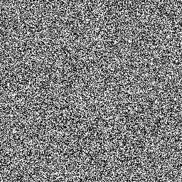
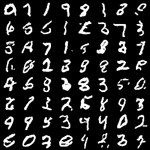

We provide a simple tutorial for Iterative 𝛼-(de)Blending applied to MNIST.
We provide a Python code and explain how it works below.
Data loading
The objective is to create a mapping between Gaussian noise (the x0) and MNIST images (the x1). We start by loading MNIST images as a torchvision dataset:
# dataset
batchsize = 64
dataset = torchvision.datasets.MNIST('/files/', train=True, download=True,
transform=torchvision.transforms.Compose([
torchvision.transforms.ToTensor(),
torchvision.transforms.Normalize(
(0.1307,), (0.3081,))
]))
dataloader = DataLoader(dataset, batch_size=batchsize, num_workers=4, drop_last=True, shuffle=True) Neural network
We train a neural network to learn the differential term (the tangent) of the mapping between the samples x0 and x1. We use a simple Unet with 3 down/up-scaling layers and skip connections.
# simple Unet architecture
class Unet(torch.nn.Module):
def __init__(self):
super(Unet, self).__init__()
# block down 1
self.block1_conv1 = torch.nn.Conv2d( 2, 64, kernel_size=(3,3), padding=(1,1), padding_mode='zeros', stride=1)
self.block1_conv2 = torch.nn.Conv2d(64, 64, kernel_size=(3,3), padding=(1,1), padding_mode='zeros', stride=2)
# block down 2
self.block2_conv1 = torch.nn.Conv2d(64, 64, kernel_size=(3,3), padding=(1,1), padding_mode='zeros', stride=1)
self.block2_conv2 = torch.nn.Conv2d(64, 64, kernel_size=(3,3), padding=(1,1), padding_mode='zeros', stride=2)
# block down 3
self.block3_conv1 = torch.nn.Conv2d(64, 64, kernel_size=(3,3), padding=(1,1), padding_mode='zeros', stride=1)
self.block3_conv2 = torch.nn.Conv2d(64, 64, kernel_size=(3,3), padding=(1,1), padding_mode='zeros', stride=1)
self.block3_conv3 = torch.nn.Conv2d(64, 64, kernel_size=(3,3), padding=(1,1), padding_mode='zeros', stride=1)
self.block3_conv4 = torch.nn.Conv2d(64, 64, kernel_size=(3,3), padding=(1,1), padding_mode='zeros', stride=2)
# block up 3
self.block3_up1 = torch.nn.ConvTranspose2d(64, 64, kernel_size=(3,3), padding=(1,1), padding_mode='zeros', stride=2, output_padding=1)
self.block3_up2 = torch.nn.Conv2d(64, 64, kernel_size=(3,3), padding=(1,1), padding_mode='zeros', stride=1)
# block up 2
self.block2_up1 = torch.nn.ConvTranspose2d(64, 64, kernel_size=(3,3), padding=(1,1), padding_mode='zeros', stride=2, output_padding=1)
self.block2_up2 = torch.nn.Conv2d(64, 64, kernel_size=(3,3), padding=(1,1), padding_mode='zeros', stride=1)
# block up 1
self.block1_up1 = torch.nn.ConvTranspose2d(64, 64, kernel_size=(3,3), padding=(1,1), padding_mode='zeros', stride=2, output_padding=1)
self.block1_up2 = torch.nn.Conv2d(64, 64, kernel_size=(3,3), padding=(1,1), padding_mode='zeros', stride=1)
# output
self.conv_output = torch.nn.Conv2d(64, 1, kernel_size=(1,1), padding=(0,0), padding_mode='zeros', stride=1)
#
self.relu = torch.nn.ReLU()
def forward(self, x, alpha):
b0 = torch.cat([x, alpha[:,None,None,None].repeat(1, 1, 32, 32)], dim=1)
b1_c1 = self.relu(self.block1_conv1(b0))
b1_c2 = self.relu(self.block1_conv2(b1_c1))
b2_c1 = self.relu(self.block2_conv1(b1_c2))
b2_c2 = self.relu(self.block2_conv2(b2_c1))
b3_c1 = self.relu(self.block3_conv1(b2_c2))
b3_c2 = self.relu(self.block3_conv2(b3_c1))
b3_c3 = self.relu(self.block3_conv3(b3_c2)) + b3_c1
b3_c4 = self.relu(self.block3_conv4(b3_c3))
u2_c1 = self.relu(self.block3_up1(b3_c4)) + b3_c3
u2_c2 = self.relu(self.block3_up2(u2_c1)) + b2_c2
u1_c1 = self.relu(self.block2_up1(u2_c2)) + b1_c2
u1_c2 = self.relu(self.block2_up2(u1_c1))
u0_c1 = self.relu(self.block1_up1(u1_c2)) + b1_c1
u0_c2 = self.relu(self.block1_up2(u0_c1))
output = self.conv_output(u0_c2)
return outputWe allocate the neural network and its optimizer:
# allocating the neural network D
D = Unet().to('cuda')
optimizer_D = torch.optim.Adam(D.parameters(), lr=0.0005)Training
The training loop consists of sampling random x0 and x1, blending them with random α ∈ [0,1] to obtain xα samples, and training the network to predict x1 − x0. We train for 16 periods over the whole dataset.
# training loop
for period in range(16):
for batch in tqdm(dataloader, "period " + str(period)):
# get data
mnist = -1 + 2*batch[0].to("cuda")
mnist = torch.nn.functional.interpolate(mnist, size=(32,32), mode='bilinear', align_corners=False)
#
x_0 = torch.randn(batchsize, 1, 32, 32, device="cuda")
x_1 = mnist
alpha = torch.rand(batchsize, device="cuda")
x_alpha = (1-alpha[:,None,None,None]) * x_0 + alpha[:,None,None,None] * x_1
#
loss = torch.sum( (D(x_alpha, alpha) - (x_1-x_0))**2 )
optimizer_D.zero_grad()
loss.backward()
optimizer_D.step()Sampling
Once the network is trained, we evaluate the mapping by starting from random x0 ∼ p0 and moving the points along the direction predicted by the neural network.
# sampling loop
with torch.no_grad():
# starting points x_alpha = x_0
x_0 = torch.randn(batchsize, 1, 32, 32, device="cuda")
x_alpha = x_0
# loop
T = 128
for t in tqdm(range(T), "sampling loop"):
# current alpha value
alpha = t / T * torch.ones(batchsize, device="cuda")
# update
x_alpha = x_alpha + 1/T * D(x_alpha, alpha)
# create result image
result = np.zeros((8*32, 8*32, 3))
for i in range(8):
for j in range(8):
tmp = 0.5+0.5*x_alpha[(i+8*j)%batchsize, ...].repeat(3,1,1).detach().cpu().clone().numpy()
tmp = np.swapaxes(tmp, 0, 2)
tmp = np.swapaxes(tmp, 0, 1)
result[32*i:32*i+32, 32*j:32*j+32, :] = tmp
saveImage('generated_mnist_'+str(t)+'.png', result)This is a GIF animation made with the exported images.



Full code
You can find the full code here.